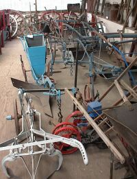

Jé crai qu'nou peut vaie eune telle tchéthue au musée à la Hougue Bie.
Jé crai qu'nou peut vaie eune telle tchéthue au musée à la Hougue Bie.La tchéthue 'tait fabritchie en bouais, probabliément d'l'orme. La haie qui pôsait sus l'esselet, lé choutchet, lé talon et les manchots - tout en bouais.
Les fièrs, l'aile, lé coutre, la pliataine sous l'talon, et d'autre pètites affaithes, sans doute, en fé ou en acyi. L'êsselet, sus tchi qu'la baie pôsait, avait deux rouelles - jointes par un êsseu - eune grande pour dans la raie et eune pus p'tite pour sus l'haut. Y'avait deux féthailles sus but sus l'êsselet, avec des creux pour réglier l'avanteu, sus tchi y'avait l'plioumet, étout auve des creux et deux pitchelles pour t'nîn la baie en plianche, ou la mettre hors pâraisse et lé caîllon pour crocheter à la tchéthue.
I'fallait siex j'vaux pour haller chutte grand'tchéthue qu'ouvrait eune raie dé tchînze ou seize pouces d'avanteu.
L'avant la grande'tchéthue pour brîsi lé haut dans l'fond dé chutte profonde raie - et j'garantis qué janmais i'n'èrvillaient la sèrcl'ye sus l'haut.

Touônner un clios:
J'n'ai janmais veu personne a touônner auve ches grand's tchéthues mais j'm'înmaginne qu'ayant bésoin dé huit j'vaux pour touônner un clios, qué trais au quatre fèrmiers travaillaient ensembl'ye prannant châtchun lus tou. A part des j'vaux, i'fallait d'la main d'oeuvre; iun pour cachi les j'vaux et l'autre pour t'nîn la p'tite tchéthue, et pour la grande à siex j'vaux, i' n'taient qu'deux étout.
I' y'avaît etout deux hommes dé chaque but du clios pour foui les carres, et quand les j'vaux arrivaient au haut du clios, iun d's hommes prannait lé j'va d'l'avant qui 'tait dans la raie et i' lé t'nait pour trouver l'autre raie pour s'en r'aller ava l'clios.
Ch'tait normal, lé temps pâssé, dé garder eune fouoyéthe en hèrbe dé chînq ou siex marches dé laize, et nou-s-y mettait des geniches ou les vaques à sé à paître - i'n'y'avaît rein d'pèrdu dans chu temps-là.
Les hommes qui 'taient au but du clios, iun fouissait l'pitchage - un creux quatre ou chîn pids d'long, et avant et large assez pour que la tchèthue piêsse prendre s'n avanteu tout d' suite - et l'autre, lé dêpitchage; i'fouissait la tèrre qué la tchéthue n'avait pas touônne. Et pis maleur s'i'y'avait d'la tèrre sus la fouoyéthe.
Sus san tracteu:
A part dé chenna, y'avait p't-être quatre hommes dé châque côté du clios à rabilyi, qui voulait dithe dréchi la raie et d'pichi les mottes avec lus bêques.
Y'avait seize hommes dans l'clios en même temps pour touônner chînq ou siex vrégies d'tèrre dans lus jour, et au d'ssus d'chenna, lé temps dé souongni et brîngi les j'vaux matîn et sé. Pouv' vos înmaginner, au jour d'aniet, d'aver à payi seize hommes pour touônner siex vrégies d'tèrre - et jé n'crai pas qu'i' payaient d's heuthes suppléméntaithes dans chu bouôn vièr temps?
L'autre jour un férmyi pâssit par siez mé sus san tracteu avec un brabant à chîn' raies; p't-être qu'il éthait touônné ses siex vrégies dans mains dé trais heuthes, tout seu, mais y'éthaît p't-être eune pèrque d'tèrre dans châque carre qui n'éthait pas 'té touchie.
J'avons pâlé d'la touônn'nie du temps pâssé et du temps d'aniet, mais voudrête-ous r'aller au temps pâssé - oui ou non?
John Germain
Viyiz étout: